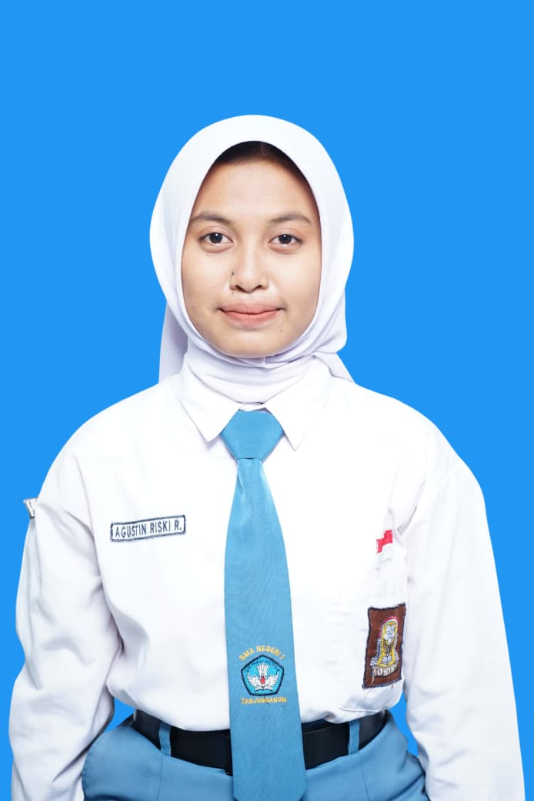

Halo, aku Agustin Riski Rahmania
Software Developer | QA | UI/UX Designer
Mahasiswi Teknik Informatika yang suka membuat aplikasi yang rapi, teruji, dan nyaman dipakai.
FlutterLaravelFigmaBlack-box Testing
🌸

Sedikit tentang aku
Aku mahasiswi D4 Teknik Informatika di Politeknik Negeri Jember (Kampus 3 Nganjuk). Aku suka memimpin tim, menguji aplikasi sampai tidak ada bug yang lolos, dan merancang tampilan yang enak dipakai. Mau kenalan lebih jauh? Pilih salah satu:
Projek pilihan
Yuk ngobrol
Punya pertanyaan atau ingin berkolaborasi? Hubungi aku lewat salah satu tombol ini.